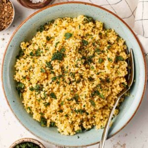
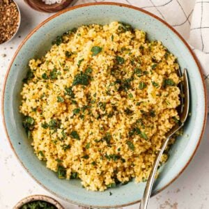

Un Clasico, Pizza Napolitana
Pizza Napolitana, Clasico Bien Italiano
La pizza napolitana, originaria de Nápoles, Italia, es considerada por muchos como la pizza auténtica y la base de todas las demás pizzas del mundo. Se caracteriza por su masa fina y elástica, bordes altos y aireados, y una cocción rápida en horno de leña a alta temperatura.
Baby Baby Baby, Back Ribs
Baby Back Ribs, Sabrosas y Jugosas
Imagina unas tiernas baby back ribs ya cocidas, con su aroma irresistible a especias y barbacoa. La carne se desprende del hueso con facilidad, revelando una textura jugosa y un sabor ahumado que deleitará tu paladar.

Hoy es 29!!!
Ñoquis Caseros de Papa: Una Sinfonía de Sabores en tu Paladar.
Los ñoquis caseros de papa son una experiencia culinaria que despierta los sentidos. Imagine suaves nubes de masa de papa que se funden en la boca, entregando un sabor terroso y ligeramente dulce.
 
